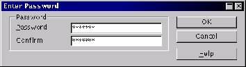
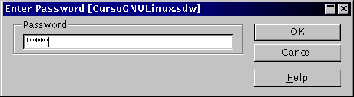
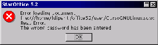

Next: Manejo de archivos
Up: El cuadro de diálogo
Previous: El cuadro de diálogo
Índice General
Una buena medida para progeter datos secretos es guardar archivos
protegidos con contraseña. En el cuadro de diálogo Guardar como se
marca la casilla Guardar con contraseña; así, el programa pide una
contraseña (fig. 5.15); cuando se
intente abrir el archivo, se preguntará por esa contraseña
(fig. 5.16) y si no se escribe
correctamente, el archivo no se abrirá
(fig. 5.17).
Figura 5.15:
Guardar con contraseña
|

|
Figura 5.16:
Ingreso de contraseña para abrir documento
|

|
Figura 5.17:
Contraseña mal ingresada
|

|
Proyecto Cursos - LuCAS - http://lucas.hispalinux.es/htmls/cursos.html